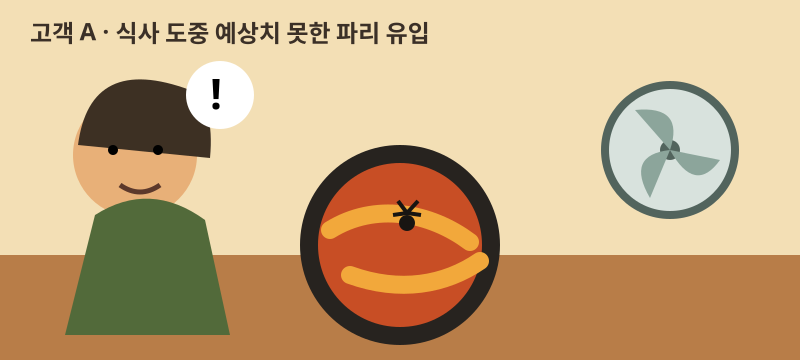
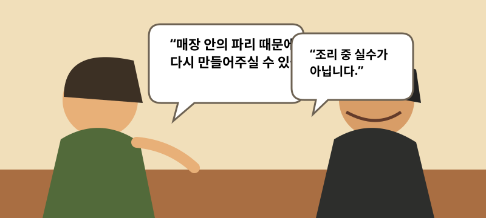
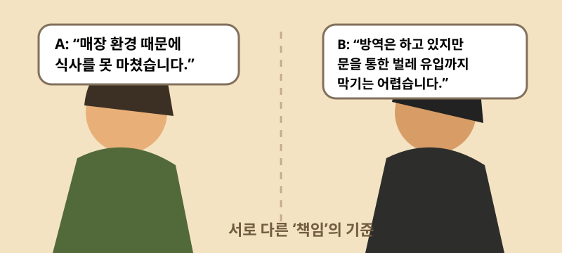
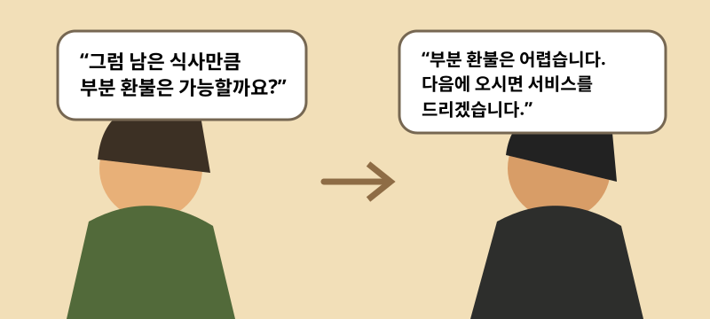
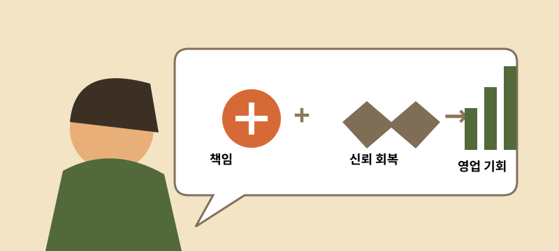
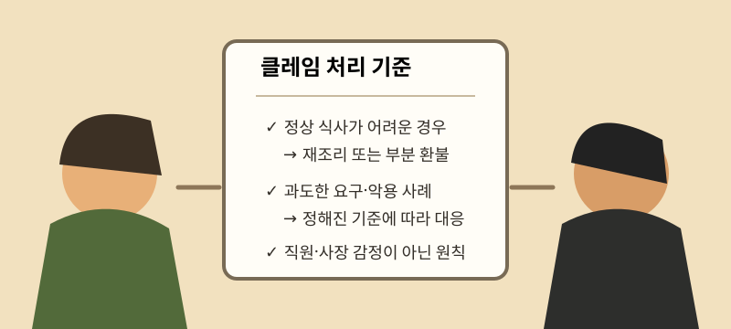

파리 한 마리와 식당의 책임
한 식당에서 고객 A가 김치찌개를 절반쯤 먹고 있을 때, 매장 안을 날던 파리가 선풍기 바람에 휩쓸려 찌개 안으로 들어갔다. 이후 고객 A와 사장님 B의 대응을 통해 책임과 서비스 회복을 생각해 본다.
고객 A는 재조리를 요청했다. 사장님 B는 조리 중 발생한 문제가 아니며, 방역업체를 통해 관리하고 있고 출입문을 통한 벌레 유입까지 완전히 막기 어렵다는 이유로 거절했다. 고객 A는 매장 환경 때문에 남은 식사를 정상적으로 이어갈 수 없게 됐으므로 부분 환불을 요청했지만 이 역시 거절됐고, 사장님 B는 다음 방문 시 서비스를 제공하겠다고 제안했다.
1. 사건의 시작 — 파리가 들어간 김치찌개

고객 A의 관점은 단순하다. 매장 식사는 음식이라는 물건 하나만을 구매하는 행위가 아니라, 그 음식을 정상적으로 먹을 수 있는 공간과 환경까지 함께 제공받는 서비스라는 것이다.
매장 식사는 음식만이 아니라, 그 음식을 정상적으로 먹을 수 있는 합리적인 환경까지 포함한 서비스다.
따라서 고객이 통제하기 어려운 매장 환경 때문에 식사를 계속하기 어려워졌다면, 조리 과정의 직접적인 실수 여부와 별개로 식당에도 일정한 해결 책임이 있다고 볼 수 있다.
2. 고객 A의 요청과 사장님 B의 거절

반면 사장님 B의 주장에도 현실적인 근거가 있다. 출입이 잦은 영업장에서 외부 벌레의 유입을 100% 차단하기는 어렵고, 방역 등 통상적인 관리를 수행하고 있었다면 개별 벌레 유입까지 모두 과실로 보는 것은 과도할 수 있다.
3. 책임의 문제와 영업의 문제는 다르다

하지만 법적·도의적 책임 여부와 별개로, 이 상황은 영업적으로 다른 선택지가 있었다.
김치찌개처럼 일정 부분 대량 조리를 전제로 하는 음식은 판매가격과 추가 한 그릇을 만드는 한계비용 사이에 차이가 있을 가능성이 크다. 재조리로 일부 손해가 발생하더라도 그 비용을 고객 경험 회복을 위한 마케팅 비용으로 볼 수 있었다.
4. 재조리는 손실이 아니라 서비스 회복의 기회일 수 있다

“파리가 들어간 식당”과 “파리가 들어갔는데 바로 새로 만들어준 식당”은 전혀 다른 기억으로 남는다.
신뢰는 문제가 한 번도 발생하지 않았을 때만 만들어지는 것이 아니다. 문제가 발생한 뒤 상대가 어떻게 회복시키는지를 통해 강하게 형성되기도 한다. 사장님 B가 즉시 재조리나 합리적인 부분 보상을 제안했다면, 고객 A에게는 불쾌한 사건이 아니라 좋은 대응 경험으로 남았을 가능성이 있다.
그 경우 재방문뿐 아니라 주변에 이야기할 만한 긍정적인 구전 요소가 될 수도 있다. 반대로 재조리 비용을 아끼는 대신 책임 공방이 길어지고, 식사가 중단되고, 재방문 가능성이 낮아졌다면 더 큰 기회비용이 발생했을 수 있다.
5. 그래도 사장님 B의 입장은 이해할 수 있다

그렇다고 사장님 B의 대응을 단순히 무책임하다고 평가하기는 어렵다. 식당을 운영하다 보면 음식을 거의 다 먹은 뒤 환불을 요구하거나, 작은 문제를 빌미로 과도한 서비스를 요구하는 고객을 반복해서 만났을 수 있다. 여기에 매출과 원가 압박이 더해지면 보상 요구 자체에 방어적으로 반응하게 되는 것도 이해할 수 있다.
결국 고객 A와 사장님 B는 서로 다른 손실을 방어하고 있었다. 고객 A는 자신이 통제할 수 없는 매장 환경 때문에 잃어버린 남은 식사를, 사장님 B는 명백한 과실이 아닌 상황까지 보상하기 시작했을 때 생길 수 있는 비용과 악용 가능성을 방어했다.
6. 필요한 것은 선의보다 기준이다

이런 문제를 개인의 친절이나 양보에만 맡길 필요는 없다. 정당한 불만과 악용을 구분할 수 있는 운영 기준이 있으면 된다. 예컨대 매장 환경으로 정상적인 식사가 어려워졌고 요구가 합리적인 범위라면 1회 재조리, 소비가 상당히 진행됐다면 부분 환불이나 다른 보상을 제공하는 식이다.
좋은 서비스는 모든 요구를 들어주는 것이 아니라, 악용은 통제하면서 정상적인 불편에는 넉넉하게 대응할 수 있는 시스템을 만드는 것이다.
파리 한 마리가 핵심은 아니었다. 우연히 발생한 작은 문제를 고객과 사업자가 어떻게 나누어 해결할 것인가의 문제였다. 양쪽의 입장이 모두 이해되기 때문에, 오히려 서비스와 관계의 가치에 대해 생각해볼 만한 사례가 된다.
고객 A와 사장님 B라는 가상의 표기를 사용해 실제 경험을 사례 형태로 재구성했다. 특정 업장의 위생 상태나 법적 책임을 단정하려는 목적은 없다.